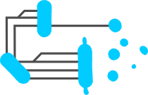
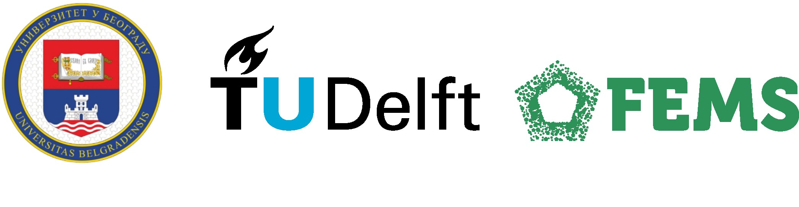

This work is licensed under a Creative Commons Attribution-ShareAlike 4.0 International License.

This webpage was adapted from https://net-science.github.io/ . You are free to share and adapt the material in any way, providing appropriate credit and distributing your modifications under the same license.
Hosted on GitHub Pages — Theme by orderedlist
BiomeFUN 2025 | Belgrade
From Genomic Analysis to Functional Models in Microbiomes and Synthetic Consortia
Practical information
- Dates: September 15th — September 19th, 2025
- Location: Hotel Palace, Topličin Venac 23, Belgrade, Serbia
- Preparation: Install R, RStudio and Anacondas
Description
Microbial communities are revolutionizing many fields, from biotechnology and health to agriculture. Mathematical and computational modeling is key to fulfill this potential. In this workshop, we will learn techniques to quantitatively analyze, understand and engineer microbial communities and synthetic microbial consortia. We will cover a range of topics, from the analysis of metagenomic sequencing data, to building and simulating meta-genome-scale metabolic models and analyzing the function of synthetic consortia using statistical "structure-function landscape" approaches.
Installation of software and setup
Instructions for the installation of all required software and configuration be found here. Please follow these instructions to ensure that everything works correctly before the start of the workshop.
Github repository
All slides, code and data can be found here. The lectures and code can also be explored using the links below.
Program
| Day | Topic | Lecturer | Materials |
|---|---|---|---|
| Mon AM | Intro Command Line, Cloud, Intro Sequencing, Quality Control, and Filtering | Marcel van den Broek Katarina Kruščić |
Slides |
| Mon PM | Amplicon Data Analysis | Milan Dragićević Alfonso Esposito |
|
| Tue AM | Metagenomics Assembly | Alfonso Esposito João Saraiva |
|
| Tue PM | Functional Genomics and Data Visualization | Prateek Shetty Bogdan Jovanović |
|
| Wed AM | Introduction to Theoretical Models in Microbial Ecology | Timmy Paez Watson Djordje Bajić |
|
| Wed PM |
Practical Introduction to Metabolic Network Modeling |
Timmy Paez Watson Minke Gabriels |
|
| Thu AM | Thermodynamic Analysis of Metabolic Networks | Karel Olavarria Minke Gabriels |
|
| Thu PM | Resource allocation and metabolic modeling of microbial communities | Đorđe Bajić Minke Gabriels |
|
| Fri AM | Structure-Function Mapping for Microbial Consortia | Juan Diaz-Colunga Uroš Gojković |